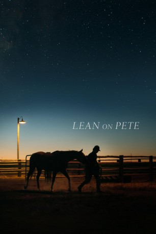

#11909 Lean on Pete
 
 IMDB-Wertung: 7.2 / 10
IMDB-Wertung: 7.2 / 10  Metascore: 80
Metascore: 80 
The film follows fifteen-year-old Charley Thompson. He wants a home, food on the table and a high school he can attend for more than part of the year. As the son of a single father working in warehouses across the Pacific Northwest, stability is hard to find. Hoping for a new start they move to Portland, Oregon where Charley takes a summer job, with a washed-up horse trainer, and befriends a failing racehorse named Lean on Pete.
Jahr: 2017
Dauer: 121 Minuten
FSK:
Land: England Studio: Filmcoopi ZürichTonspuren: DD5.1 - ,
Untertitel:
Auflösung: 1080p (1920x1040) Größe: 9287 MB
Genre: Drama, Abenteuer
Regisseur: Andrew Haigh
Drehbuch: Andrew Haigh, Willy Vlautin
Soundtrack: James Edward Barker
Darsteller:
 Charlie Plummer als Charley
Charlie Plummer als Charley Amy Seimetz als Lynn
Amy Seimetz als Lynn Travis Fimmel als Ray
Travis Fimmel als Ray Steve Buscemi als Del
Steve Buscemi als Del Ayanna Berkshire als Cop 1
Ayanna Berkshire als Cop 1- Connor Brenes als Cop 2
- Kurt Conroyd als Nurse
 Chloë Sevigny als Bonnie
Chloë Sevigny als Bonnie- Julia Prud'homme als Ruby
- Jason Rouse als Mitch
 Lewis Pullman als Dallas
Lewis Pullman als Dallas- Justin Rain als Mike
- Dana Millican als Woman Driver
 Steve Zahn als Silver
Steve Zahn als Silver- Rachael Perrell Fosket als Martha
- Joseph Bertót als Warehouse Man
 Frank Gallegos als Santiago
Frank Gallegos als Santiago Alison Elliott als Aunt Margy
Alison Elliott als Aunt Margy- Paul Avallone als Cowboy at Party (uncredited)
- Mike Brakefield als Racetrack Bettor (uncredited)
- Chris Ihlenfeldt als Race Spectator (uncredited)
- Curtis McGann als Bet Taker (uncredited)
- Jason Beem als Race Announcer
- Tolo Tuitele als Lynn's Husband
- Dennis Fitzpatrick als Old Timer
- Rusty Tennant als Portland Downs Security Guard
- Bob Olin als Mr Kendall
- Teyah Hartley als Laurie
- Heath Lourwood als Desert Officer
- Francisco Diego Garcia als Bob
- Raul Espericueta als Race Spectator (uncredited)
- Evan Franulovich als Desert Officer 2 (uncredited)
 P.E. Ingraham als Race Spectator (uncredited)
P.E. Ingraham als Race Spectator (uncredited)- Craig Kennedy als Horse Trainer (uncredited)
- Andrew James Kushner als Police Officer (uncredited)
- John R. Lewis als Racetrack Spectator (uncredited)
- Dawnya Michaelson als Horse Groom (uncredited)
- Suzanne Stoker als Racetrack Gambler (uncredited)
- Kyle Stoltz als Race Track Patron (uncredited)
Datei: X:\2017(G-M)\Lean on Pete (2017, FSK, 1920x1040).mkv seit 09.10.2019
Festplatte: HD 2017(A-Z)-2018(A-F)
 Es gibt insgesamt 148 Filme in der Gruppe '2017(G-M)'
Es gibt insgesamt 148 Filme in der Gruppe '2017(G-M)'